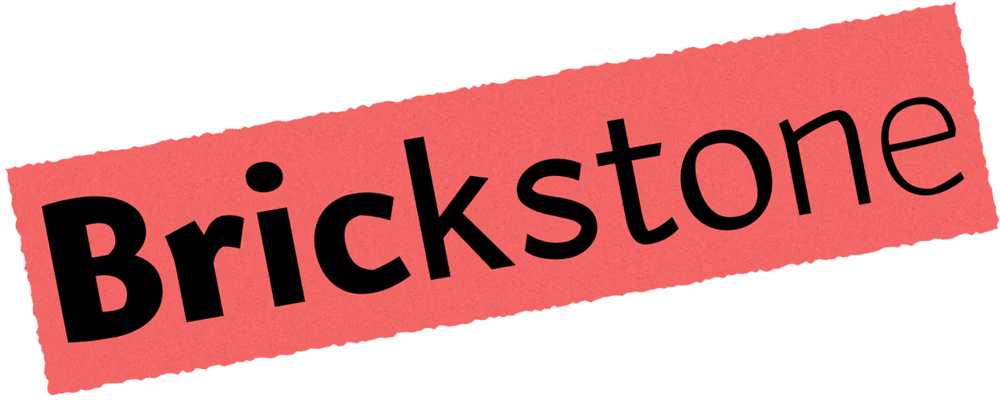
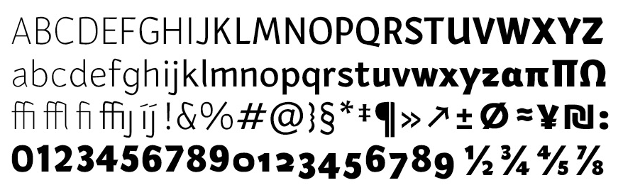
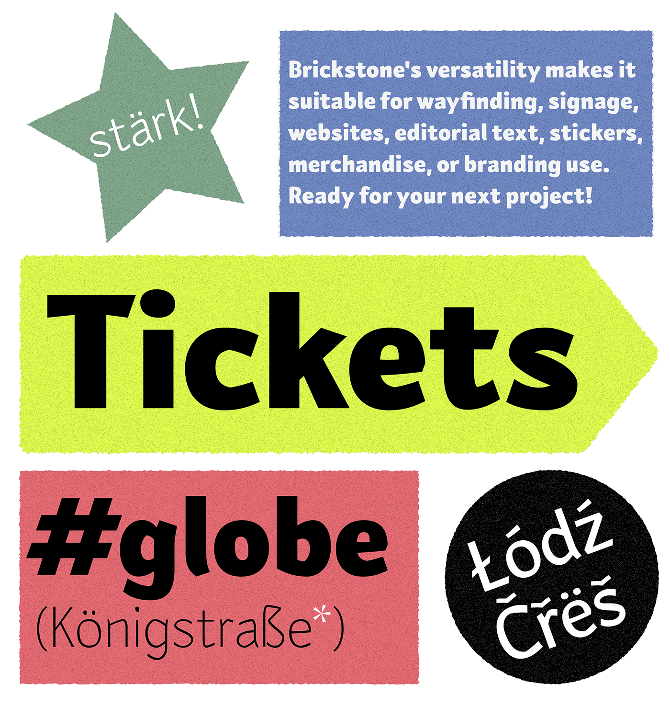
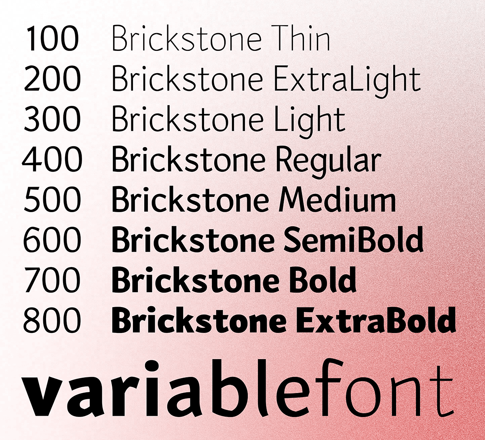
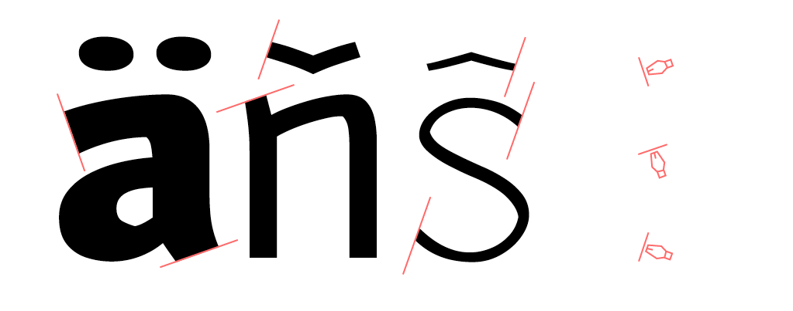
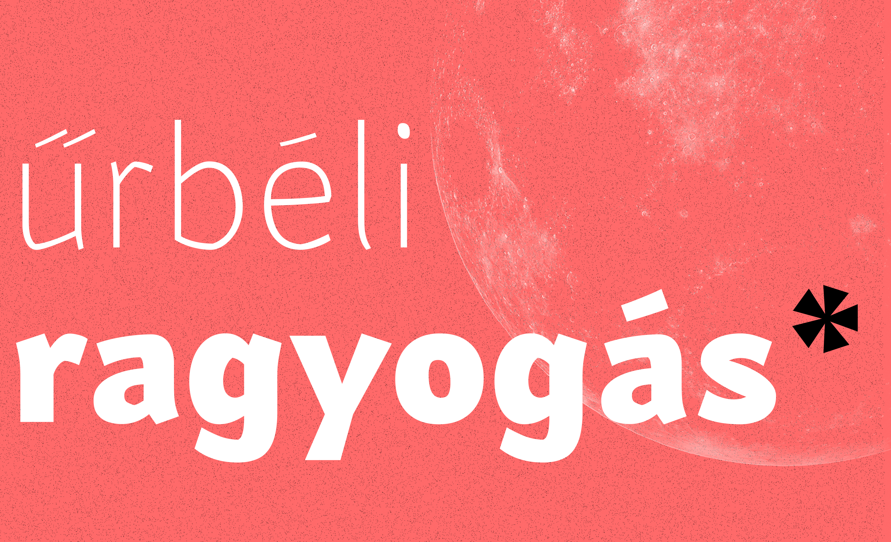
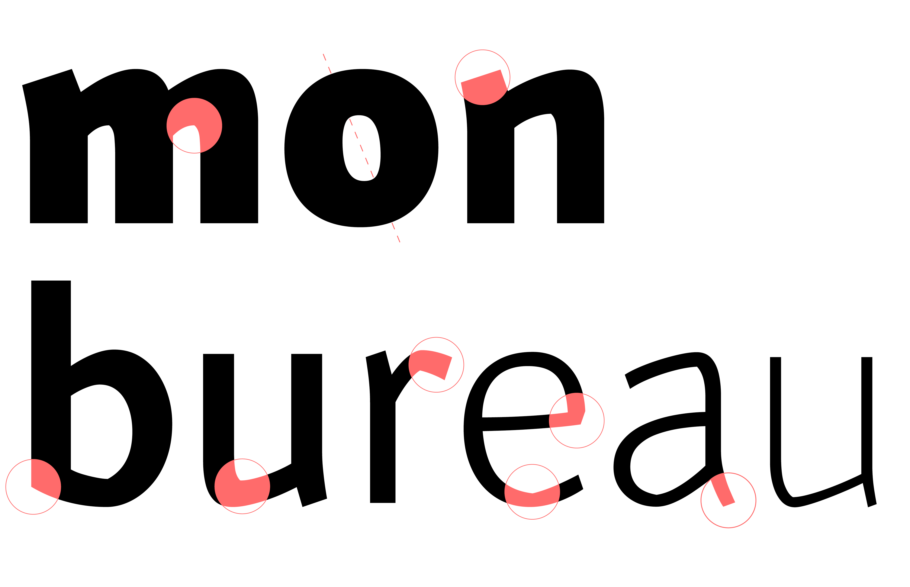
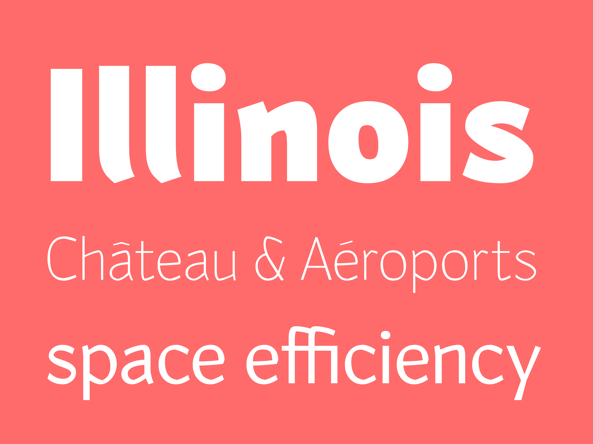
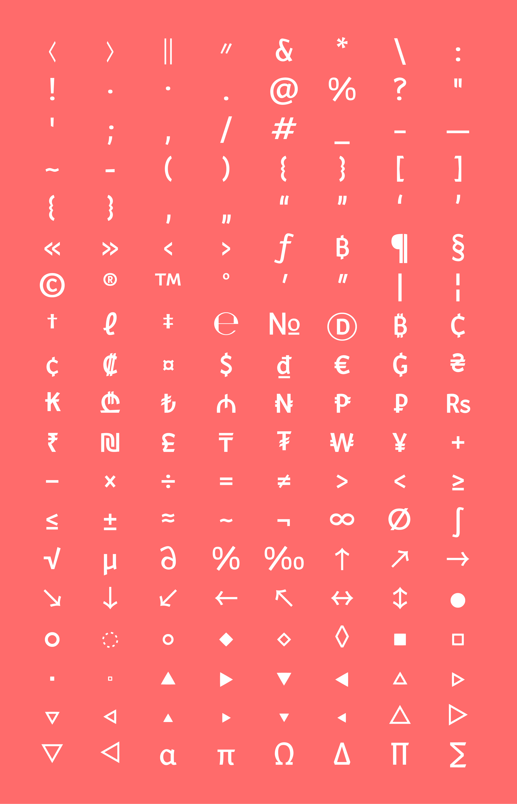
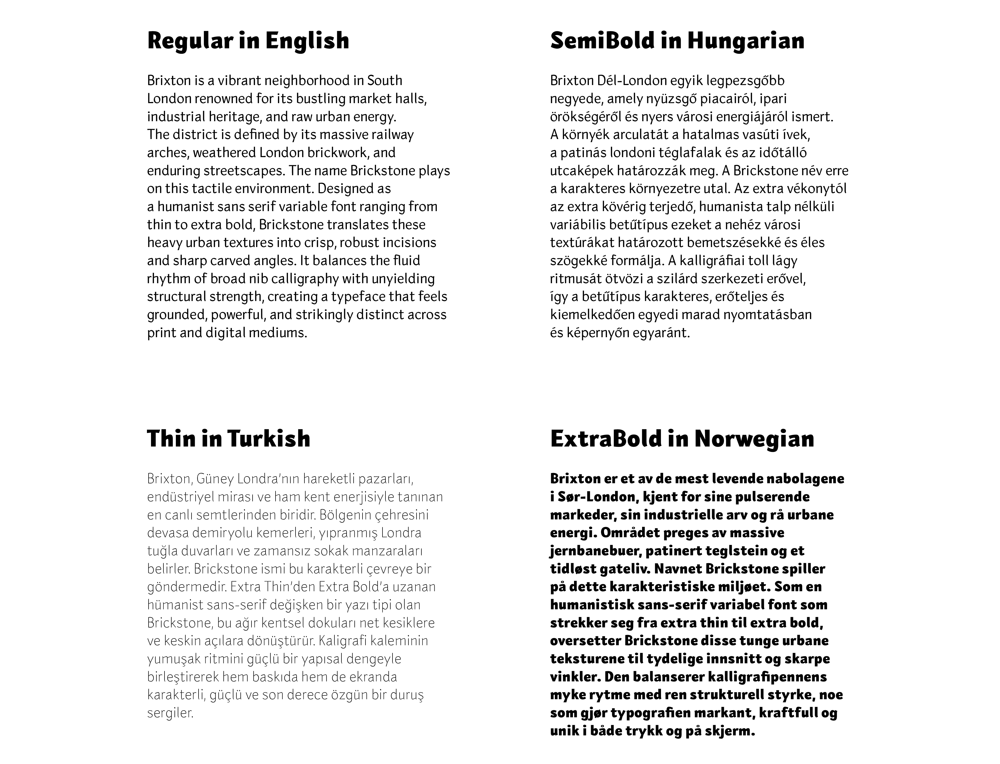

Brickstone is a humanist sans-serif typeface available in a variable font format ranging from Thin to ExtraBold. The name “Brickstone” subtly references small incisions and sudden breaks, nodding to stone or brick fractures, while also suggesting a sense of bold solidity. Inspired by broad-nib calligraphic mechanics, the typeface’s smooth curves are punctuated by sharp, unexpected angles. What began as an experiment with changing the angles of the strokes using a Pilot Parallel Pen evolved into a functional type system where calligraphic cuts meet the structure of stone carving. Brickstone maintains a distinctive voice without being intrusive, a sans-serif that feels quietly unique while remaining highly versatile.

It works well in display settings while remaining clear and legible in continuous text. Its generous x-height supports readability at smaller sizes, while its secret strength is how illustrative its sharp details become in large headlines. Designed with accessibility at its center and a human touch throughout, Brickstone is an ideal choice for branding, visual identities, editorial layouts, websites, and digital applications.

Brickstone includes a variable weight axis ranging from Thin to ExtraBold. It gives full control over text hierarchy, from small body copy to large headlines.

In the early stages, while drawing on paper with a broad-nib pen, I refined quirky and unexpected shapes to retain their human touch and intriguing personality, shaping them into distinctive highlights rather than visual distractions. The process continued until the design met its core goals: to be cohesive, practical, highly legible, engaging and instantly recognizable.

The objective was to create a typeface that performs effortlessly both on screen and in print, making every application, whether elegant or bold, a pleasure to use. Another key priority was clarity: open apertures, distinct character shapes, and a generous x-height all come together to enhance readability across different sizes and environments.

Brickstone’s distinctive incisions bring a dynamic rhythm and individual character to the type, perfectly balanced by structural consistency

What sets Brickstone apart is its focus on legibility: key design features actively enhance reading comprehension. For example, the lowercase ‘l’ is crafted to remain distinctly separate from the uppercase ‘I’, preventing any character confusion.

Includes a comprehensive set of punctuation, currency marks, mathematical operators, geometric shapes, and symbols.

Brickstone provides broad linguistic coverage, supporting European Latin-based languages across Western, Central, Eastern, Northern, and Southern Europe.

To contribute, see github.com/youruseraccount/yourrepository.